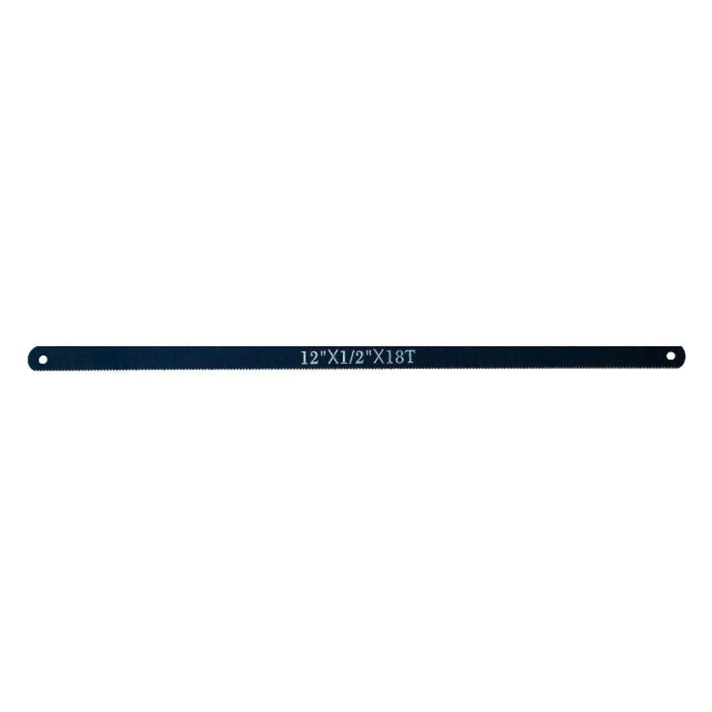

TC925020
29.90

QTY: 100 Piece
TPI: 24
Size: 300 mm
Application:
The Tork Craft Hacksaw Blades for cutting different rypes of metals, plastic, aluminium and wood. Wavy set teeth for better performance on harder metal cutting applications, provides a smooth cut finish.